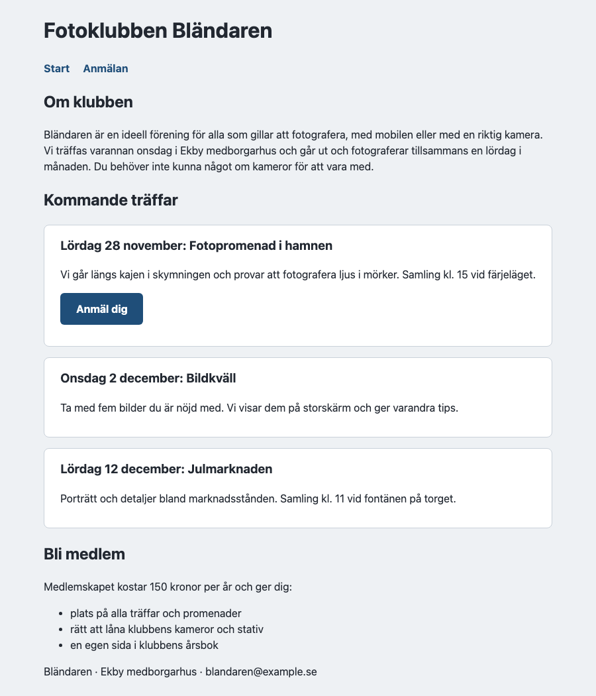
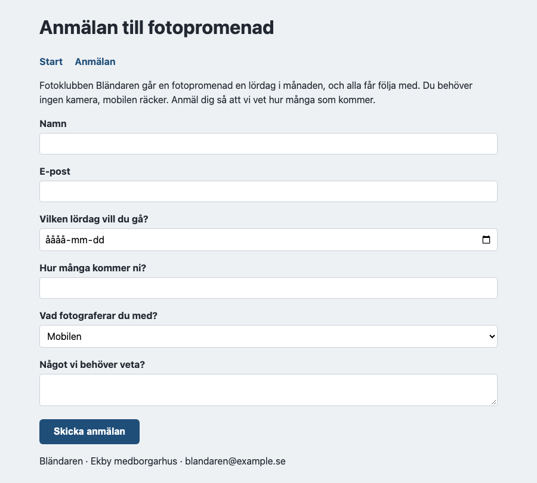

Övning T6 · Kort och knappar
Läs så här: Välj en nivå per etapp: 🟢 Grön ger dig varje steg, 🔵 Blå säger vad som behövs men inte koden, 🔴 Röd ger bara kravet. Etapperna är desamma på alla nivåer, så du kan byta nivå mellan etapperna (och mitt i om du fastnar). Varje etapp slutar med Så vet du att etappen är klar: kontrollera den innan du går vidare. Längst ner finns Vanliga fel och, om du vill ha mer, ⚫ Svart.
Du bygger: Fotoklubben Bländarens startsida och anmälningssida från förra veckan, med en meny utan understrykningar, träffarna som vita kort, en länk som ser ut som en knapp och ett formulär där varje fält har sin etikett på egen rad. Sist kontrollerar du stilmallen i CSS-validatorn. Det är samma byggstenar som de flesta webbplatser består av.


Du behöver: mappen ovningar, öppen i VS Code, och Live Server. Mappen t6-start, som ligger som zip-fil bredvid den här övningen i Learnpoint. Klipp 5 och 6 sedda och övning T4 och T5 gjorda.
Paletten:
| Färg | Hex-kod | Används till |
|---|---|---|
| nästan svart | #222831 | text |
| ljust gråblå | #eef1f4 | bakgrund |
| vit | #ffffff | kort, text på knappar |
| ljusgrå | #c9d1da | kanter |
| mörkblå | #1f4e79 | länkar, knappar |
| djupblå | #163a5c | knapp under muspekaren |
Etapp 1 · Grunden på båda sidorna
Varför: det här är samma början som i T4 och T5: stilmallen, box-sizing-raden, text och färger, och en maxbredd i mitten.
🟢 Grön · Steg för steg
- Hämta
t6-start.zipfrån Learnpoint, packa upp den och dra mappent6-starttill OVNINGAR i filpanelen. Öppnat6-start/index.htmlmed Live Server. - Skapa
style.cssit6-start(högerklicka på mappen, New File…) och skriv:
/* Fotoklubben Bländaren: kort och knappar */
* {
box-sizing: border-box;
}
body {
font-family: system-ui, Helvetica, Arial, sans-serif;
line-height: 1.5;
color: #222831;
background-color: #eef1f4;
}
header,
main,
footer {
max-width: 48rem;
margin: 0 auto;
}
a {
color: #1f4e79;
}- Spara. Lägg till länken till stilmallen efter
<title>-raden i bådeindex.htmlochsignup.html:
<link rel="stylesheet" href="style.css" />- Spara båda filerna och titta på båda sidorna. Menyn högst upp tar dig mellan dem.
header, main, footer är en gruppering: de tre delarna får samma maxbredd (48 × 16 = 768 pixlar) och läggs i mitten med margin: 0 auto, så att de står kant i kant under varandra.
🔵 Blå · Med ledtrådar
- Packa upp
t6-start.zipoch läggt6-startiovningar. style.cssit6-start, länkad från båda sidorna. Börja med en kommentar och box-sizing-raden.body: typsnittetsystem-ui, Helvetica, Arial, sans-serif, radavståndet1.5, textfärgen och bakgrundsfärgen ur paletten.- En gruppering av
header,mainochfooter:max-width48remoch centrerade medmargin. - Alla länkar (
a) i den mörkblå färgen.
🔴 Röd · Bara kravet
Båda sidorna använder samma style.css, som börjar med box-sizing-raden. Texten och bakgrunden har palettens färger och typsnittet är datorns eget utan klackar. Sidhuvud, huvudinnehåll och sidfot är högst 768 pixlar breda (i rem) och centrerade, skrivet i en enda regel. Länkarna är mörkblå.
Etapp 2 · Menyn
Varför: menylänkarna ska se annorlunda ut än länkarna i texten, och en ättlingselektor väljer bara länkarna i menyn.
🟢 Grön · Steg för steg
- Sist i
style.css, skriv:
nav a {
margin-right: 16px;
font-weight: bold;
text-decoration: none;
}
nav a:hover {
text-decoration: underline;
}- Spara. Håll pekaren över Start och Anmälan. Titta också på länken Anmäl dig i det första träffkortet.
nav aär en ättlingselektor: mellanslaget betyder "inuti". Den väljer bara deasom ligger någonstans inutinav. Länken Anmäl dig ligger inte i menyn och är därför fortfarande understruken.margin-rightär luften till höger om varje länk, så att de inte står ihop.nav a:hoverär menylänkarna medan muspekaren är över dem.
🔵 Blå · Med ledtrådar
- En regel som bara väljer länkarna inuti
nav(två element med mellanslag emellan):16pxluft till höger (margin-right), fet text och ingen understrykning. - En regel för samma länkar medan muspekaren är över dem (
:hover): understrukna.
🔴 Röd · Bara kravet
Menylänkarna är feta, inte understrukna och har 16 pixlar luft till höger. Under muspekaren blir de understrukna. Länkar utanför menyn påverkas inte.
Etapp 3 · Korten
Varför: en klass kan sitta på flera element, och då får alla samma utseende från en enda regel.
🟢 Grön · Steg för steg
- I
index.html: ge vart och ett av de tre<article>klassencard, så att alla tre raderna blir:
<article class="card">- Spara. Sist i
style.css, skriv:
.card {
margin-bottom: 16px;
padding: 16px 24px;
background-color: #ffffff;
border: 1px solid #c9d1da;
border-radius: 8px;
}
.card h3 {
margin-top: 0;
}- Spara och titta.
- Samma klass på tre element: regeln
.cardgäller alla tre. margin-bottomär luften under varje kort, så att de inte ligger kant i kant..card h3är en ättlingselektor igen, med en klass först: rubrikerna inuti korten.margin-top: 0tar bort rubrikens luft ovanför, så att den inte hamnar långt ner i kortet.
🔵 Blå · Med ledtrådar
- Ge de tre
articleiindex.htmlklassencard. - En regel för
.card:16pxluft under (margin-bottom),padding16px 24px, vit bakgrund, en1pxhel (solid) kant i den ljusgrå färgen ochborder-radius8px. - En regel för rubrikerna inuti korten (klassen, mellanslag,
h3): ingen luft ovanför (margin-top).
🔴 Röd · Bara kravet
De tre träffarna är vita kort med en tunn ljusgrå kant, rundade hörn (8 pixlar), luft innanför (16 pixlar uppe och nere, 24 till sidorna) och 16 pixlar mellan korten. Rubrikerna i korten har ingen luft ovanför. Alla tre får utseendet från samma regel.
Etapp 4 · En länk som knapp
Varför: en länk ligger i textraden som ett ord, och display: inline-block gör den till en låda som kan få luft runt sig och se ut som en knapp.
🟢 Grön · Steg för steg
- I
index.html, i det första kortet: ge länken Anmäl dig klassenbutton, så att raden blir:
<p><a href="signup.html" class="button">Anmäl dig</a></p>- Spara. Sist i
style.css, skriv:
.button {
display: inline-block;
padding: 12px 24px;
font-size: 1rem;
font-weight: bold;
color: #ffffff;
text-decoration: none;
background-color: #1f4e79;
border: 0;
border-radius: 6px;
}
.button:hover {
background-color: #163a5c;
}- Spara och titta. Håll pekaren över knappen.
- Högerklicka på knappen och välj Inspektera. I Styles, bocka av
display: inline-blocki regeln.button. Den mörkblå bakgrunden går nu nästan ända upp till texten ovanför, och kortet under knappen blir lägre: luften runt länken räknas inte in i raden. Bocka i den igen. - Längre ner i Styles står regeln
amedcolor: #1f4e79, överstruken. Den gäller inte, för.buttonsägercolor: #ffffff.
- En länk är från början ett inline-element: den ligger i textraden som ett ord bland andra, och luft ovanför och under tar inte plats. Ett block-element, som
pochh1, tar en egen rad i hela bredden.inline-blockär mitt emellan: lådan stannar i raden men får plats för sin padding. - När två regler säger olika om samma sak gäller den här ordningen, som kallas kaskaden: en klass vinner över ett element, och kommer två lika regler efter varandra vinner den senare. Därför blir texten vit, fast regeln
asäger mörkblå. border: 0behövs inte för länken, men knappen i formuläret i nästa etapp har en kant från början, och den tar raden bort.
🔵 Blå · Med ledtrådar
- Ge länken Anmäl dig klassen
button. - En regel för
.button, i den här ordningen:displaymed värdetinline-block,padding12px 24px, textstorleken1rem, fet text, vit textfärg, ingen understrykning, mörkblå bakgrund, ingen kant (border: 0) ochborder-radius6px. - En regel för knappen under muspekaren: den djupblå bakgrunden ur paletten.
- Bocka av
displayi DevTools Styles och se vad som händer med lådan. Leta reda på den överstruknacolori regelna: varför gäller den inte?
🔴 Röd · Bara kravet
Länken Anmäl dig ser ut som en knapp: mörkblå med vit fet text utan understrykning, luft innanför (12 pixlar uppe och nere, 24 till sidorna), rundade hörn (6 pixlar) och ingen kant. Under muspekaren blir den djupblå. Utseendet kommer från en klass som också ska gå att använda på formulärets knapp.
a är överstruken i Styles.Etapp 5 · Formuläret
Varför: en etikett på egen rad ovanför ett brett fält är lättare att läsa och att träffa, särskilt för den som zoomar.
🟢 Grön · Steg för steg
- Gå till anmälningssidan i Chrome. Etiketterna står till vänster om fälten och fälten är olika breda.
- I
signup.html: ge knappen sist i formuläret klassenbutton, så att raden blir:
<button class="button">Skicka anmälan</button>- Spara. Sist i
style.css, skriv:
label {
display: block;
margin-bottom: 4px;
font-weight: bold;
}
input,
select,
textarea {
width: 100%;
padding: 8px;
font-family: system-ui, Helvetica, Arial, sans-serif;
font-size: 1rem;
border: 1px solid #c9d1da;
border-radius: 4px;
}- Spara och titta.
labelär ett inline-element, som en länk.display: blockgör att etiketten tar en egen rad, och fältet hamnar under den.width: 100%gör fälten lika breda som raden de står i.- Formulärfält ärver inte typsnittet från
body, så det skrivs här igen. - Knappen har nu samma utseende som Anmäl dig på startsidan, utan en enda ny rad CSS. Det är poängen med en klass.
<button class="button">ser dubbelt ut, men elementet och klassen är två olika saker:.buttonmed punkt väljer klassen,buttonutan punkt skulle välja elementet.
Hela style.css ser nu ut så här:
/* Fotoklubben Bländaren: kort och knappar */
* {
box-sizing: border-box;
}
body {
font-family: system-ui, Helvetica, Arial, sans-serif;
line-height: 1.5;
color: #222831;
background-color: #eef1f4;
}
header,
main,
footer {
max-width: 48rem;
margin: 0 auto;
}
a {
color: #1f4e79;
}
nav a {
margin-right: 16px;
font-weight: bold;
text-decoration: none;
}
nav a:hover {
text-decoration: underline;
}
.card {
margin-bottom: 16px;
padding: 16px 24px;
background-color: #ffffff;
border: 1px solid #c9d1da;
border-radius: 8px;
}
.card h3 {
margin-top: 0;
}
.button {
display: inline-block;
padding: 12px 24px;
font-size: 1rem;
font-weight: bold;
color: #ffffff;
text-decoration: none;
background-color: #1f4e79;
border: 0;
border-radius: 6px;
}
.button:hover {
background-color: #163a5c;
}
label {
display: block;
margin-bottom: 4px;
font-weight: bold;
}
input,
select,
textarea {
width: 100%;
padding: 8px;
font-family: system-ui, Helvetica, Arial, sans-serif;
font-size: 1rem;
border: 1px solid #c9d1da;
border-radius: 4px;
}🔵 Blå · Med ledtrådar
- Ge
<button>isignup.htmlklassenbutton. label: på egen rad (display: block),4pxluft under och fet text.- En gruppering av
input,selectochtextarea: bredden100%,padding8px, samma typsnitt sombody(fälten ärver det inte), textstorleken1rem, en1pxljusgrå hel kant ochborder-radius4px.
🔴 Röd · Bara kravet
Varje etikett står i fetstil på egen rad, med 4 pixlar luft ner till sitt fält. Alla fält är lika breda som kolumnen, har 8 pixlar luft innanför, samma typsnitt och storlek som sidans text, en tunn ljusgrå kant och lätt rundade hörn (4 pixlar). Knappen ser ut som knappen på startsidan.
Etapp 6 · CSS-validatorn
Varför: webbläsaren hoppar tyst över CSS den inte förstår, men CSS-validatorn säger var felet är.
🟢 Grön · Steg för steg
- Gå till
https://jigsaw.w3.org/css-validator/i Chrome. Det är W3C:s validator för CSS, samma organisation som HTML-validatorn du använde förra veckan. - Klicka på fliken By file upload. Klicka Välj fil (Choose File), gå till
ovningar/t6-startoch väljstyle.css. Klicka Check. - Överst står Congratulations! No Error Found. och under det hela din stilmall. Har du fått fel: läs radnumret och meddelandet, rätta i VS Code, spara och kontrollera igen.
- Prova att göra fel med flit: ta bort
#ibackground-color: #ffffff;i regeln.cardoch spara. Kontrollera filen igen (välj filen på nytt med Välj fil innan du klickar Check, annars skickar Chrome den gamla). - Nu står felet under Errors, med radnumret, selektorn
.cardoch ett meddelande om attffffffinte är ett giltigt värde förbackground-color. Titta i Chrome: korten har blivit genomskinliga. - Sätt tillbaka
#, spara och kontrollera en sista gång: inga fel.
🔵 Blå · Med ledtrådar
Kontrollera style.css i CSS-validatorn på jigsaw.w3.org/css-validator/, fliken By file upload. Rätta tills det inte finns några fel. Ta sedan bort # från en färg, kontrollera igen och läs vad validatorn säger och på vilken rad. Välj filen på nytt varje gång du kontrollerar. Sätt tillbaka #.
🔴 Röd · Bara kravet
style.css ger inga fel i W3C:s CSS-validator. Du har sett hur validatorn rapporterar en färg utan #.
style.css. Du kan säga vilken rad validatorn pekade på när # saknades, och hur korten såg ut i Chrome då.⚫ Svart · Utöka (frivilligt, utan facit)
Tryck på Tab-tangenten på anmälningssidan, flera gånger. Markeringen hoppar mellan länkarna, fälten och knappen; det är så den som inte använder mus tar sig fram. Gör markeringen tydligare: :focus fungerar som :hover, men gäller när elementet är valt med tangentbordet. Ge fälten och .button en regel med :focus och egenskapen outline, en ram som ritas utanför kanten utan att ta plats, till exempel outline: 3px solid #f2a541;. Tabba igenom sidan och titta efter att ramen syns tydligt både mot den gråblå bakgrunden runt fälten och runt den mörkblå knappen. Syns den dåligt någonstans, välj en annan färg ur eller nära paletten. Kör validatorn igen.
Vanliga fel
- Knappen har blå text och understrykning, eller bara bakgrund bakom texten: klassen sitter på fel element eller är felstavad.
class="button"ska sitta på<a>(och på<button>), inte på<p>runt omkring. Kontrollera i Elements att länken har klassen och i Styles att regeln.buttonfinns med. - Knappens bakgrund går ända upp till texten ovanför, eller sticker ner mot kortets kant:
display: inline-blocksaknas eller är felstavad. Utan den är länken inline, och dess padding tar ingen plats i raden. - Startsidan har färger men anmälningssidan inte:
<link>-raden saknas isignup.html. Varje sida behöver sin egen länk till stilmallen, även om filen är densamma.